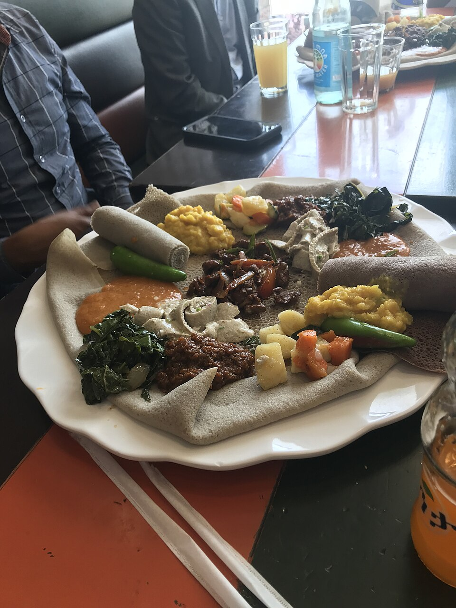

1. The 3-Day Teff Fermentation
Naturally fermenting ancient Ethiopian teff flour to cultivate signature sourdough complexity and airy, spongy honeycomb texture.
Injera is both the plate and the utensil of Horn of Africa cuisine. Fermented over three days from nutrient-dense teff grain, our sourdough injera is soft, airy, and tangy—the perfect vessel to scoop up deeply simmered berbere wats and tender meats.

Naturally fermenting ancient Ethiopian teff flour to cultivate signature sourdough complexity and airy, spongy honeycomb texture.
Roasting sun-dried red chilies with Ethiopian cardamom (korarima), ginger, rue berries, and cloves to create multi-layered aromatic heat.
Clarifying pure dairy butter with garlic, turmeric, kosseret herb, and fenugreek for an unmistakable velvety richness in every dish.